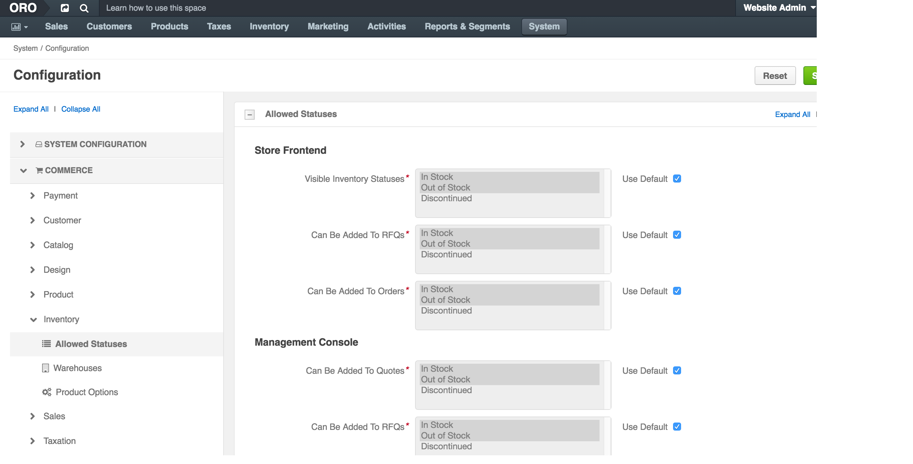
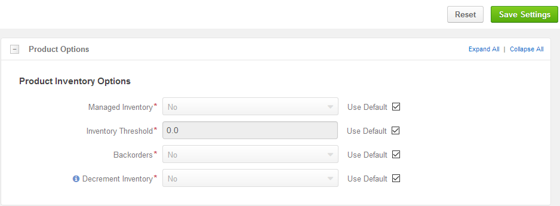
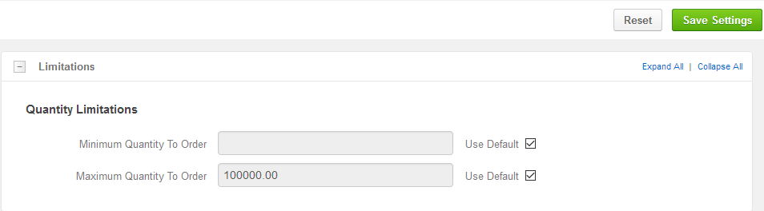

OroCommerce groups inventory configuration options into the following categories:
You can control the way product inventory is displayed for your buyers (in the OroCommerce Store Frontend) and sales people (in the OroCommerce Management Console). Moreover, you can restrict adding products with particular inventory status to an RFQ, customer order, quote, or a shopping list.
To change the default inventory statuses:
Navigate to the system configuration (click System > Configuration in the main menu).
Select Commerce > Inventory > Allowed Statuses in the menu to the left.
The following page opens:
The following table describes the options available on the page:
| Name | Description |
|---|---|
| Store Frontend: Visible Inventory Statuses | A buyer can see products with the selected inventory statuses on the OroCommerce store frontend. |
| Store Frontend: Can Be Added To RFQs | A buyer can add Products with the selected inventory statuses when creating an RFQ on the OroCommerce store frontend. |
| Store Frontend: Can Be Added To Orders | A buyer can add Products with the selected inventory statuses when creating an Order on the OroCommerce store frontend. |
| Management Console: Can Be Added To Quotes | A sales person can add products with the selected inventory statuses to the Quotes using OroCommerce management console. |
| Management Console: Can Be Added To RFQs | A sales person can add products with the selected inventory statuses to the RFQs using OroCommerce management console. |
| Management Console: Can Be Added To Orders | A sales person can add products with the selected inventory statuses to the Orders using OroCommerce management console. |
| Management Console: Can Be Added To Shopping Lists | A sales person can add products with the selected inventory statuses to the Shopping Lists using OroCommerce management console. |
To customize the list of statuses for any of the aforementioned options:
- Clear the Use Default box next to the option.
- Click on the inventory status to select/deselect it. Press Shift and click to select/deselect a range of items. Press Ctrl and click to select/deselect multiple items in no particular order.
Click Save.
You can control the way product inventory is managed for every product in the OroCommerce product catalog.
To customize the default product inventory options:
Navigate to the system configuration (click System > Configuration in the main menu).
Select Commerce > Inventory > Product Options in the menu to the left. The following page opens:
The following table describes the options available on the page:
| Name | Description |
|---|---|
| Managed Inventory | This options indicates whether the product inventory is handled by OroCommerce vs external application. |
| Inventory Threshold | A minimum quantity of the product that is treated as In stock. When a product quantity reaches this threshold value, the product inventory status fallback to Out Of Stock. |
| Backorders | A flag that indicates whether OroCommerce accepts backorders. When set to yes, buyers and sales people can order products in the quantities that are not currently available in the warehouses. The remaining portion of the order will be sustained until the product gets back in stock. |
| Decrement Inventory | A flag that indicates whether OroCommerce decrements inventory upon order. When both Decrement Inventory and Backorders are enabled, product quantity may get negative. |
To customize any of these options:
- Clear the Use Default box next to the option.
- Select Yes/No for the flag-like options, and type in the updated value for the threshold-like options.
Click Save.
After you created the warehouse in the Inventory > Warehouses section, you should enable and prioritize them to ensure that OroCommerce uses the most efficient and recommended strategy for inventory updates that happen during the Store operations.
To enable and prioritize warehouses:
Enable as many warehouses as you need:
- If necessary, click +Add Warehouse.
- Select the warehouse name in the Choose a Warehouse list.
- Assign a numeric priority to the enabled warehouse (1 is higher, 100 is lower). Products will be ordered and shipped from the higher priority warehouses first.
Note
You can manage the list of enabled warehouses using the following actions:
You can control the minimum and maximum quantities that are available buyers (in the OroCommerce Store Frontend) and sales people (in the OroCommerce Management Console) can claim in the RFQ, customer order, quote, or a shopping list.
To change the default inventory quantity limitations:
Navigate to the system configuration (click System > Configuration in the main menu).
Select Commerce > Inventory > Limitations in the menu to the left.
The following page opens.
The following table describes the options available on the page:
| Name | Description |
|---|---|
| Minimum Quantity To Order | Minimum quantity that buyer or sales person may be the claim in the RFQ, customer order, quote, or a shopping list. |
| Maximum Quantity To Order | Maximum quantity that buyer or sales person may be the claim in the RFQ, customer order, quote, or a shopping list. |
To customize any of these options:
- Clear the Use Default box next to the option.
- Type in the updated quantity.
Click Save.